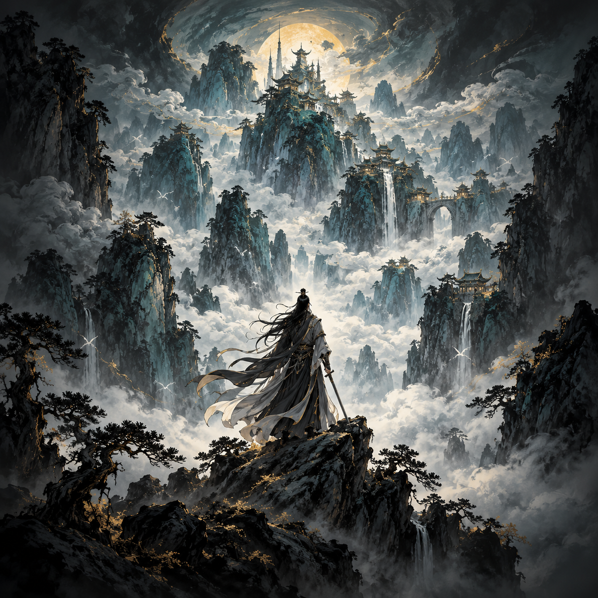

เหตุการณ์สำคัญ
เดือนที่ 1 · ประตูสำนัก
ก้าวแรกใต้เมฆาคราม
ผลลัพธ์บางอย่างจะปรากฏในอนาคต
ยืนยันตัวตน
ใช้ Gmail เป็นชื่อสำหรับแยกเซฟบนอุปกรณ์นี้ หรือทดลองเล่นแบบ Guest
เลือกเส้นทางการเล่น
ยังไม่ได้เข้าสู่ระบบ
บันทึกชะตายุทธภพ · ต้นแบบบทที่หนึ่ง
จากเด็กห้าขวบในคืนตระกูลล่ม
สู่สิบสองปีแห่งการหนีตาย เติบโต และทวงคืนความจริง
บันทึกอัตโนมัติบนอุปกรณ์นี้
ตั้งค่าชีวิต
เลือกโหมด
เลือกเส้นเรื่อง
กฎการต่อชีวิตในโหมดอิสระ
เรื่องราวเริ่มเมื่ออายุ 5 ขวบ ในคืนที่บ้านถูกเผา—ก่อนเจ้าจะรู้จักคำว่าสำนักหรือยุทธภพ
ชื่อนี้ถูกกำหนดโดยเนื้อเรื่องและไม่สามารถเปลี่ยนได้เลือกพรสวรรค์กำเนิด
เลือกระดับรากวิญญาณ
เดือนที่ 1 · ประตูสำนัก
ผลลัพธ์บางอย่างจะปรากฏในอนาคต
บันทึกชีวิตฉบับสมบูรณ์
義
บันทึกชะตายุทธภพ
ตราประทับที่ค้นพบ 0 / 14 ชะตา
ความคืบหน้านอกเกม